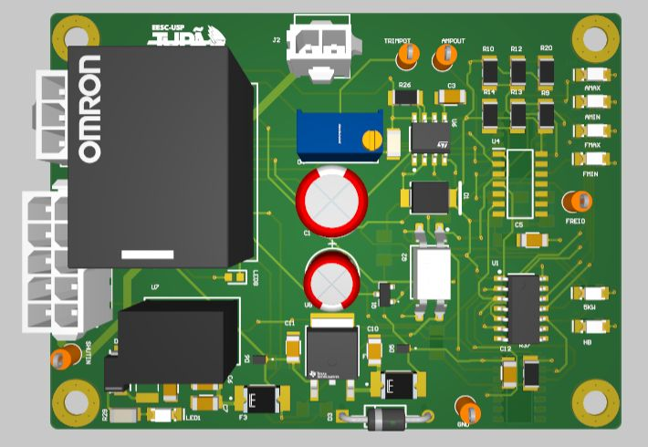

TX · EESC-USP Tupã
BSPD
Hardware logic for brake and power plausibility checks.
EXPLORE THE DESIGN
Interactive PCB viewer
Rotate and zoom the board in 3D, switch to PCB to inspect copper layers, or open SCH to follow the circuit.
Altium 365 viewer · The photos and schematic drawings below are also available if the viewer cannot load.

Board details
- Analog circuitry
- LM324DT comparison stages
- Logic
- NAND/NOR gates and HCF4013 latch
- Timing
- TS555-based circuit
- Output
- Relay shutdown interface
BSPD schematics
3 sheetsBSPD logic and analog circuitryView sheet

ConnectorsView sheet

Protection circuitView sheet

Altium project
TX in Altium 365T09 BSPD revision
These source links may require workspace access. The schematic drawings above are saved with this portfolio.